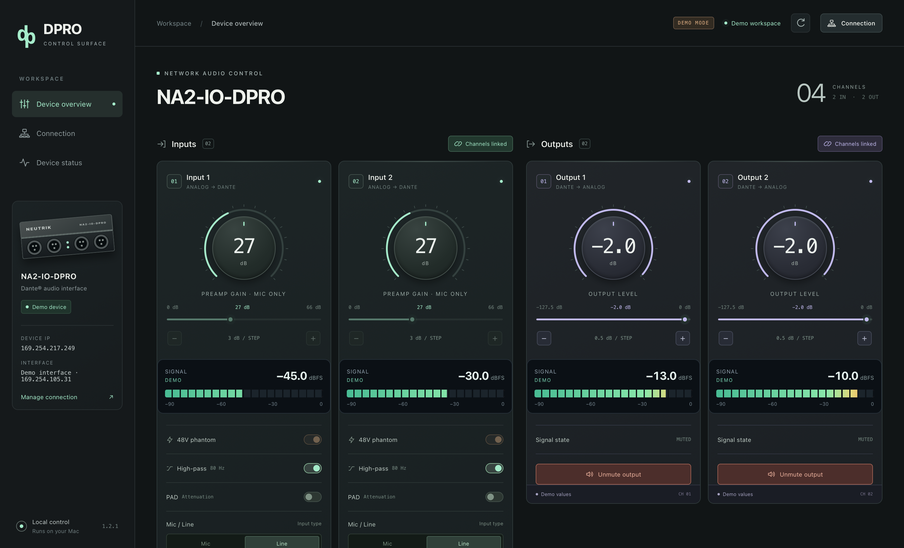

Mic, Line, and PAD.
Gain, 48 V phantom, 80 Hz HPF and input type. PAD becomes available in Line mode; gain and phantom controls are Mic-only.
A new control surface for the Neutrik NA2-IO-DPRO. Native Apple Silicon. Live meters. Every setting read back from your device.
v1.2.1 · Apple Silicon · macOS 15+ target · MIT licensed
Mic / Line / Dante® audio interface
Your channels up front. Connection a click away. Device status and session activity there when you need them.

Gain, 48 V phantom, 80 Hz HPF and input type. PAD becomes available in Line mode; gain and phantom controls are Mic-only.
Output attenuation in half-dB steps, independent mute, and confirmed values after every change.
Per-channel dBFS bars and numeric readings. Stale data clears automatically, so silence and a lost stream are distinguishable.
Link inputs or outputs, synchronize from channel 1, and mirror subsequent changes from either channel with readback.
Bonjour discovery finds the control endpoint and fills a single result automatically. Manual IP entry remains available.
The overview stays focused. Device status holds feedback and session activity without interrupting your connection.
We built DPRO Control because useful audio hardware deserves software we can maintain. The project grew from a single-channel script into a control surface for our own NA2-IO-DPRO.
Neutrik lists the DPRO as discontinued, with successors dated October 2023. The installed official controller 2.1.0.0 was Intel-only. Apple’s announced end of general Rosetta support after macOS 27 gives that unchanged build a limited path forward on Apple Silicon.
Our answer is a native ARM64 app, built and maintained by Loud and Beyond and shared as a ready-to-install download. The official app can still work today; this project is about retaining an option to maintain control tomorrow. Future macOS releases still need testing.
Background: Neutrik product listing ↗ · Apple Rosetta announcement ↗
Sources checked September 2026.
No Python setup. No browser dependency. No account.
Extract the ZIP and move DPRO Control to Applications on your Apple Silicon Mac.
Allow Local Network access. Disconnect other controllers and select the Ethernet adapter connected to the DPRO.
Use the discovered control address, then connect. Current settings and live meters appear in the overview.
Independent Edition — Loud and Beyond
Download the finished app. Created by Loud and Beyond.